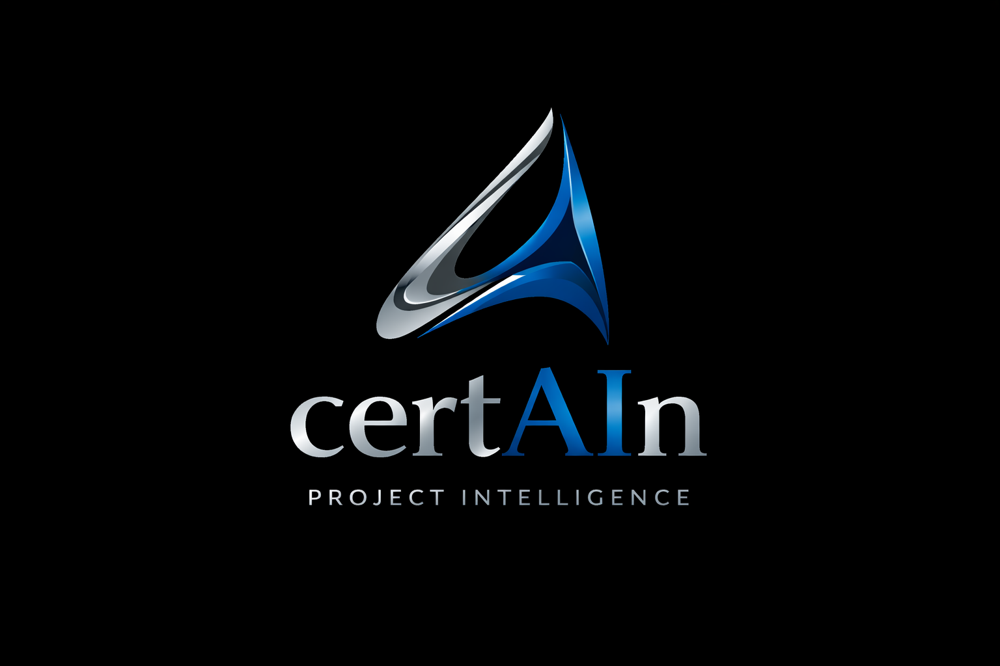
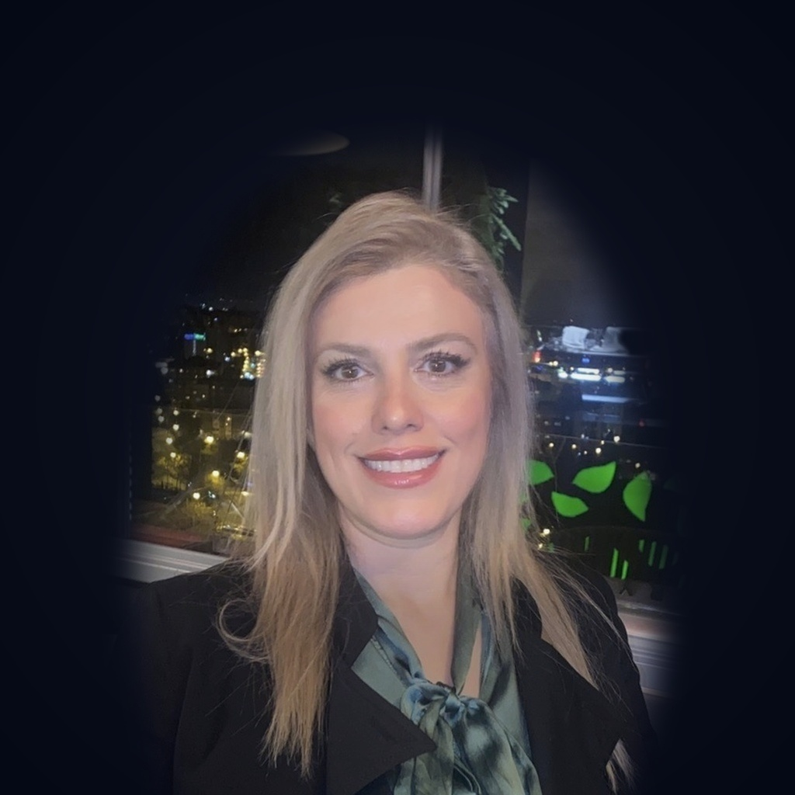
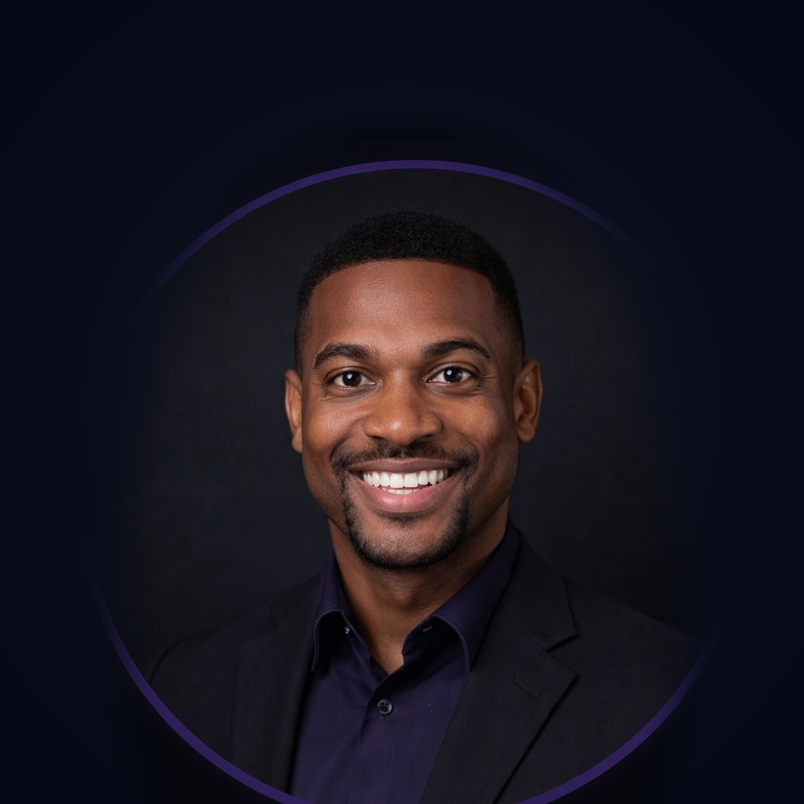

Our Mission
To eliminate project failure by giving every team access to AI-powered forecasting and risk intelligence. We believe that project delays are predictable — and preventable — when teams have the right data at the right time.

We're building the future of project intelligence — where AI helps teams deliver on time, every time.
To eliminate project failure by giving every team access to AI-powered forecasting and risk intelligence. We believe that project delays are predictable — and preventable — when teams have the right data at the right time.
A world where every project plan comes with a probability of success. Where project managers can confidently tell stakeholders not just when a project will finish, but how certain they are about it.
We push the boundaries of what AI can do for project management.
Enterprise-grade security and compliance are non-negotiable.
Every feature is driven by real feedback from project teams.
Built for teams of every size, across every continent.
From idea to industry-leading AI platform
certAIn launched with a vision to bring AI certainty to project management.
Raised $4.2M seed round to build the core AI forecasting engine.
Launched Monte Carlo simulations & AI risk detection to first 100 enterprise clients.
Achieved full compliance for enterprise-ready security.
Raised $18M to expand globally and scale AI capabilities.
Powering project forecasting for Fortune 500 companies worldwide.

IT Engineer & AI Project Manager specialist. Senior VP at Apple Co., Senior IT Specialist & Project Manager at the White House.
Industrial Engineer and AI Project Manager specializing in leading end-to-end digital initiatives in international environments. Proven experience in developing digital products, optimizing workflows, and enhancing operational efficiency using Agile methodologies (Scrum). Contributed to large-scale transformation programs, including process redesign and cloud migration for high-impact platforms.

Ex-Microsoft engineer specializing in ML infrastructure and simulation systems, with expertise in building scalable data pipelines, model deployment architectures, and high-performance systems for complex forecasting and decision-making applications.
Former Deloitte Partner with 18 years of experience in corporate finance and scaling technology ventures. Expert in financial modeling, fundraising strategy, and driving operational efficiency across AI and SaaS organizations.

PhD in Operations Research with a strong foundation in optimization and decision science. Former leader of predictive analytics teams at Siemens, specializing in building advanced forecasting models, scalable AI solutions, and data-driven systems for complex operational and planning challenges.

Previously built project management tools at Atlassian and Asana.
Join 500+ enterprise teams already using certAIn to deliver projects with AI-powered certainty.
Contact Sales →